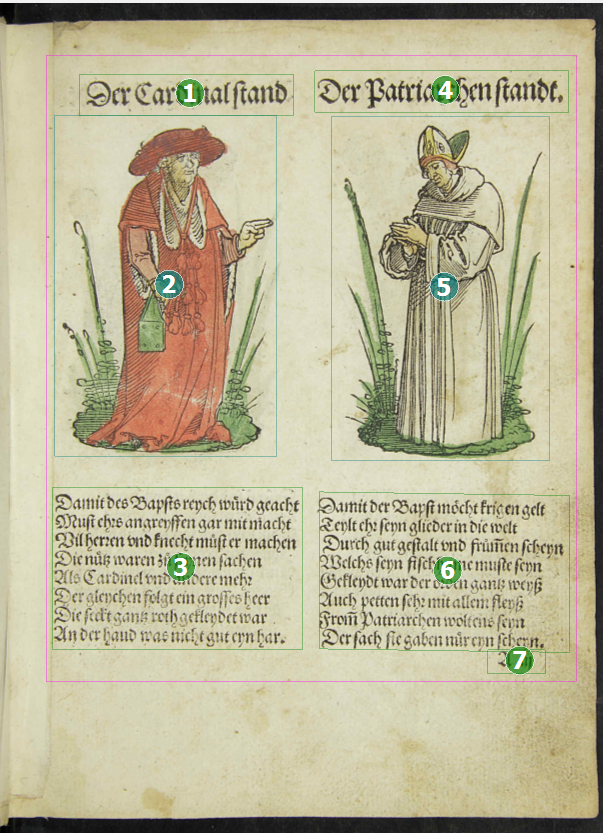

Leserichtung (ReadingOrder)
Um inhaltliche und formale Zusammenhänge nicht zu zerreißen, werden einzelne Seitenelemente gruppiert. Für eine solche Gruppierung kann in der Regel eine Leserrichtung vorgegeben werden. Eine ReadingOrder besteht ausschließlich nur zwischen Regionen. Die Leserichtung in einer Zeile wird nur durch die Reihenfolge der einzelnen Word-Elemente bestimmt, eine explizite Auszeichnung ist nicht vorgesehen.
Dies erfolgt mit dem Element <ReadingOrder>.
- Handelt es sich um in Beziehung stehende Elemente (z.B. bei einer Überschrift und
dem dazu
folgenden Absatz), ist die Leserichtung vom Typ „geordnet“ in diesem Fall ist
das Element
<OrderedGroup>zu verwenden. - Handelt es sich um gleichberechtigte Elemente (z.B. bei Werbung), die für sich
allein stehen, ist die Leserichtung vom Typ „ungeordnet“ in diesem Fall ist das
Element
<UnorderedGroup>zu verwenden.
Durch eine laufende Nummerierung (beginnend bei Null) wird die Leserichtung festgelegt. Hierbei werden die Regionen einer Seite zunächst von links nach rechts (bei linksläufigen Schriften rechts nach links) und von oben nach unten unter Beachtung einer Spalteneinteilung geordnet.
Elemente, die außerhalb des Satzspiegels liegen (z.B. Marginalien oder Kustoden), sind immer nach dem „Lesen“ der Satzspiegelinhalte zu betrachten.
ReadingOrder in PAGE XML
<ReadingOrder>
<OrderedGroup id="ro_1542194237187" caption="Regions reading order">
<RegionRefIndexed index="0" regionRef="r_1"/>
<RegionRefIndexed index="1" regionRef="r_2"/>
</OrderedGroup>
</ReadingOrder>Bildbeispiele


